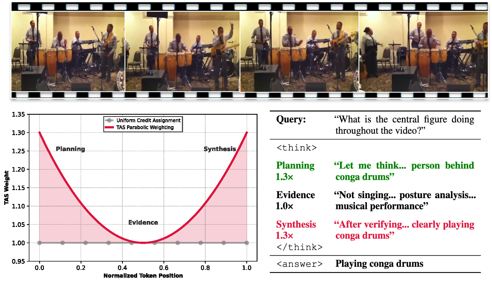

Method
Off-Policy Architecture with Stratified Replay Buffer
AVATAR employs a stratified replay buffer B (size 10k) divided into three tiers: Easy (25%), Medium (35%), and Hard (40%). Tier assignment is driven by each prompt's moving average reward R̄(q) — the bottom 40% by score go to the Hard tier, ensuring the model repeatedly engages with its hardest failure modes. A balanced 4 on-policy / 4 off-policy split per group empirically maximizes performance.
Hinting Mechanism
When a prompt remains in the Hard tier and KL divergence from the behavior policy drops (policy stops exploring), a pre-computed hint is injected — a short strategic suggestion (e.g., "first locate the object making the sound, then count") generated by a teacher model from full problem context. This unlocks the hardest 20% of the distribution that would otherwise yield zero reward.
Temporal Advantage Shaping (TAS)
TAS replaces GRPO's uniform credit assignment with a U-shaped parabolic weight. For a sequence of length L, each token at normalized position t̃ = t/(L−1) receives:
wt = 1.0 + λTAS · (2t̃ − 1)²
Minimal weight (1.0) at the middle; maximum weight (1.0 + λTAS) at the beginning (planning) and end (synthesis). No learned critic required.

Figure 2. TAS U-shaped parabolic weight amplifies the planning (start) and synthesis (end) of each reasoning chain.
Three-Stage Training Pipeline
Stage 0: cold-start SFT. Stage 1: general visual reasoning. Stage 2: audio-visual alignment (audio captions from Kimi-Audio). Stage 3: fine-grained audio-based localization (stepwise judge reward from InternVL3). TAS is applied throughout all RL stages.

Figure 3. AVATAR's three-stage RL curriculum with progressively harder tasks and richer reward functions.